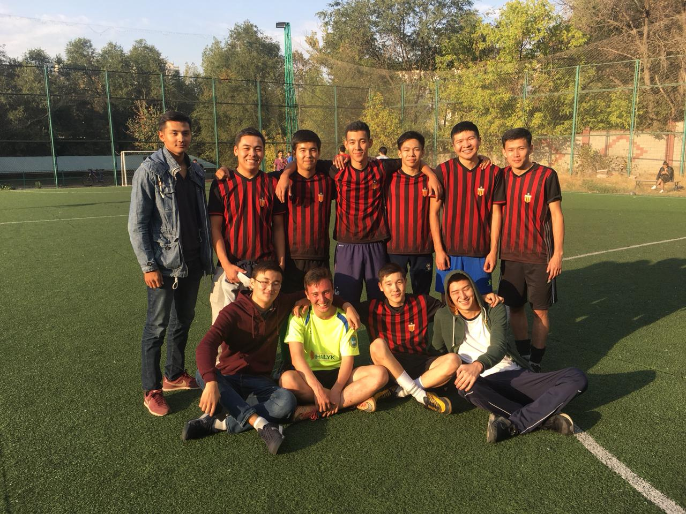

The club was created in 2016. At first, the club was named after Berdaliev Syrym as "West United", but then a year later it was renamed "FC BATYS". In the same year, he took the honorable 5th place in the university league and won the Kabdygaliyev Bagzhan Cup. And in the following season, he was headed by Merey Mukhtar and is currently at the top of the standings in the AFA league.
